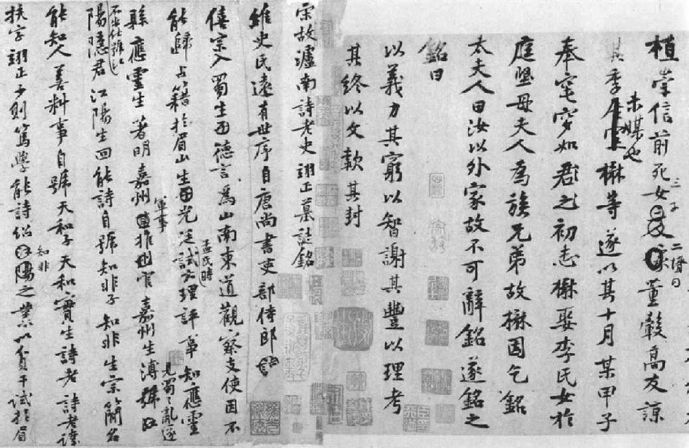

卷二
宋仁宗嘉祐七年至神宗元丰二年
（一〇六二—一〇七九）
第六章·神、鬼、人
第七章·王安石变法
第八章·拗相公
第九章·人的恶行
第十章·两兄弟
第十一章·诗人、名妓、高僧
第十二章·抗暴诗
第十三章·黄 楼
第十四章·逮捕与审判
纵然苏东坡才华熠煜，在仕途上他仍须由低级而上升。在仁宗嘉祐六年（一〇六一年），朝廷任命他为大理评事，签书凤翔府判官，有权联署奏折公文。在唐朝，因行地方分权之制，形成藩镇割据，国家颇蒙其害，最后酿成叛乱，陷国家于危亡，而藩镇大员每为皇亲国戚、朝廷诸王。宋代力矫其弊，采用中央集权，武力环驻于国都四周，并创行新制，对各省长官严予考核节制，其任期通常为三年，因此时常轮调。每省设有副长官联署公文奏议，即为此新制度中之一部分。苏子由也被任为商州军事推官，但是父亲在京为官，兄弟二人必须有一人与父亲同住京师，因为无论如何，总不可使鳏居的老父一人过活。子由于是辞谢外职不就。子由为兄嫂赴任送行，直到离开封四十里外之郑州地方，兄弟二人才平生第一次分手。子由随后回京，在此后三年之内，东坡在外，子由一直偕同妻子侍奉老父。东坡在郑州西门外，望着弟弟在雪地上骑瘦马而返，头在低陷的古道上隐现起伏，直到后来再不能望见，才赶程前进。他寄弟弟的第一首诗写的是：
不饮胡为醉兀兀？此心已逐归鞍发。 归人犹自念庭闱，今我何以慰寂寞？ 登高回首坡垄隔，但见乌帽出复没。 苦寒念尔衣裘薄，独骑瘦马踏残月。 路人行歌居人乐，童仆怪我苦凄恻。 亦知人生要有别，但恐岁月去飘忽。 寒灯相对记畴昔，夜雨何时听萧瑟？ 君知此意不可忘，慎勿苦爱高官职。
“夜雨对床”之思，在唐人寄弟诗中有之，此种想法后成了苏氏兄弟二人团聚之乐的愿望，也是辞官退隐后的理想生活。后来有两次兄弟二人又在官场相遇，彼此在诗中提醒曾有此“夜雨对床”之约。
由京都到凤翔的函件，要走十天才到，兄弟二人每月经常互寄诗一首。由那些诗函之中，我们可以发现，初登宦途时，苏东坡是多么心神不安。兄弟二人常互相唱和。在唱和之时，要用同韵同字，所以是磨炼写诗技巧很好的考验，在中国过去，此种写诗方法，是文人必须具备的成就。在这类诗中，可以找到令人惊喜的清新思想，用固定韵脚的字，各行要有自然的层次。犹如在玩纵横字谜一样，韵用得轻松自然时，其困难正足以增加乐趣。在东坡写给弟弟最早的和诗之中，东坡已经显示出他那完美的诗才。他按规定用“泥”和“西”两字做韵脚，写出了下列的诗：
人生到处知何似？应似飞鸿踏雪泥。 泥上偶然留指爪，鸿飞那复计东西。
这首七绝成了东坡诗的佳作，此处“飞鸿”一词是人心灵的象征。实际上，本书中提到的东坡的行为事略也只是一个伟大心灵偶然留下的足迹，真正的苏东坡只是一个心灵，如同一个虚幻的鸟，这个鸟也许直到今天还梦游于太空星斗之间呢。
凤翔位于陕西的西部，离渭水不远。因为陕西为中国文化发源地，整个渭水流域富有古迹名胜，其名称都与古代历史相关。强邻西夏，位于今之甘肃，时常为患中国，陕西省因而人力财力消耗甚大，故人民生活甚为困苦。苏东坡到任后第一年内，建了一栋庭园，作为官舍，前有水池，后有亭子，另有一上好花园，种花三十一种。
苏东坡既已安定下来，判官之职又无繁重公务，他遂得出外遨游，到南部东部山中游历，动辄数日。有一次，他因公须到邻近各地视察，急需结束些悬而未决的罪案，并要尽其可能将更多囚犯释放。这件差事对他再适合无比，于是他畅游太白山和黑水谷一带的寺院，以及周文王的故里。有时清闲无事，他便到西安附近有名的终南山去，去看一个朋友珍藏的珍奇的手稿，或是吴道子真迹。
东坡年富力强，无法安静下来。这时是他生平第一次独自生活，只与娇妻稚子在一起。如今他已然尝到做官生活的味道，但并不如他梦想的那么美妙。远离开京都的骚扰杂乱，在外县充任判官，副署公文，审问案件，颇使他感觉厌烦无味。有时难免感觉寂寞，但也有时举杯在手，月影婆娑，又感觉欣喜振奋。
在他还不够成熟老练之时，他需要妻子的忠言箴劝。苏夫人在务实际、明利害方面似乎远胜过丈夫。她对丈夫非常佩服，她知道自己嫁的是个年轻英俊的诗人。才华过人的诗人和一个平实精明的女人一起生活之时，往往是显得富有智慧的不是那个诗人丈夫，而是那个平实精明的妻子。在婚姻上所表现的，仍然是男女相辅相成。苏夫人知道丈夫那坦白直爽甚至有时急躁火暴的性格之后，她觉得倒不须急于向他表示什么佩服崇拜，还是要多悉心照顾他，才是尽自己身为贤妻的本分。苏东坡是大事聪明，小事糊涂。但是构成人生的往往是许多小事，大事则少而经久不见，所以苏东坡则事事多听从妻子。夫人提醒他说他现在是初次独自生活，而没有父亲照管。苏东坡把人人当好人，但是太太则有知人之明。苏东坡与来访的客人谈话之时，太太总是躲在屏风后屏息静听。一天，客人走后，她问丈夫：“你费那么多工夫跟他说话干什么？他只是留心听你要说什么，好说话迎合你的意思。”
《李白仙诗卷》 书法 苏轼 宋
有人把李白与苏轼做过一个比较，得出的结论是：“虽然与李白一样，苏轼也算得上是北宋一代最为豪放的文人，但他仍比李白细腻得多，内向得多，也往往在狂放之余带有一种淡淡的哀愁。……‘慎静以处忧患’，正是苏轼人生哲理的核心。”
她又警告丈夫要提防那些过于坦白直率的泛泛之交，要提防丈夫认为“天下无坏人”的大前提之下所交的那些朋友。总之，苏东坡的麻烦就在于看不出别人的短处。妻子对他说：“提防那些人，速成的交情靠不住。”东坡承认妻子的忠言很对。我想苏夫人的这种智慧是自“君子之交淡如水”得来的——水没有刺激的味道，但是人永远不会对之生厌。真诚的友谊永远无须特别表白。真正的好朋友彼此不必通信，因为既是对彼此的友情信而不疑，谁也不需要写什么。数年分别后，再度相遇，友情如故。
有的人不忙不快乐，苏东坡就是这一型。那时陕西旱象出现，已经好久不雨，农人为庄稼忧心如焚。除去向神灵求雨，别无他法，而求雨是为民父母官者的职责。苏东坡突然行动起来，心想一定是什么地方出了毛病，不然神不会发怒。现在若不立刻下雨，黎民百姓就要身蒙其害了。苏东坡现在要写一份很好的状子，向神明呈递。在这方面，他是万无一失的。他现在准备立即在神明之前，以他那雄辩滔滔的奇才，为老百姓祈求普降甘霖。在渭水以南，有一道高大的山脉，通常称为秦岭，而秦岭上最为人所知、最高、最雄伟的山峰，叫太白山。太白山上一个道士庙前面，有一个小池塘，雨神龙王就住在其中，这个龙王可以化身为各种小鱼。苏东坡就要到那个道士庙里去求雨。他为农人求雨，但是也像一个高明的律师一样，想办法教龙王明白天旱对龙王也没有好处。在奉承了几句话之后，他在那篇祈雨文里说：“乃者自冬徂春，雨雪不至，西民之所恃以为生者，麦禾而已。今旬不雨，即为凶岁；民食不继，盗贼且起。岂惟守土之臣所任以为忧，亦非神之所当安坐而熟视也。圣天子在上，凡所以怀柔之礼，莫不备至。下至于愚夫小民，奔走畏事者，亦岂有他哉？凡皆以为今日也。神其盍亦鉴之。上以无负圣天子之意，下以无失愚夫小民之望。”
由太白山下来之后，他继续游历各处，特别是上次漏过的名胜。他在当月七日求雨，回到城里，十六日，曾下小雨，但是对庄稼仍嫌不足，农民也不满意。他研求原因。有人告诉他在太白山的祈求并不是无效，但是神由宋朝一个皇帝封为侯爵之后，再去祈求便不再灵验。苏东坡在《唐书》上一查，发现太白山神在唐朝原是封为公爵的，山神实际上是被降低了爵位，大概因此颇不高兴。苏东坡立刻为太守向皇上草拟了一个奏本，请恢复山神以前的爵位。然后他又与太守斋戒沐浴，派特使敬告神灵，说他们已为神求得更高的封号，又从庙前的池塘里取回一盆“龙水”。
十九日，苏东坡出城去迎“龙水”。全乡下人人振奋，因为这次的成功是他们极为关怀的事。乡间早已来了好几千人，当地十分热闹，在“龙水”未到时，已然阴云密布，天空昏黑。老百姓等了好久，雨硬是不肯下。苏东坡又进城去，陪同宋太守到真兴寺去祷告。在路上，他看见一团乌云在地面低低飘过，在他面前展开。他从农夫手里借了个篮子，用手抓了几把乌云，紧紧藏在篮子之中。到了城里，他祷告乌云的诗里有：“开缄乃放之，掣去仍变化。云兮汝归山，无使达官怕。”祷告已毕，他又和宋太守出城去。他俩走到郊区，忽然来了一阵冷风。旗帜和长枪上的缨子都在风中猛烈飘动。天上乌云下降，犹如一群野马。远处雷声隆隆。正在此时，一盆“龙水”到来。苏东坡和宋太守前去迎接“龙水”，把“龙水”放在临时搭建的祭台上，随即念了一篇祈雨文，这篇祈雨文和其他的祭文至少还保存于他的文集里。仿佛是有求必应，暴雨降落，乡间各地普沾恩泽。两天之后，又下大雨，接连三日。小麦、玉蜀黍枯萎的茎秆又挺了起来。
现在欢声遍野，但是最快乐的人却是诗人苏东坡。为纪念这次喜事，他把后花园的亭子改名为“喜雨亭”，并写了一篇《喜雨亭记》。这篇文章是选苏东坡文章给学生读时常选的一篇，因为文笔简练，很能代表苏文的特性，又足以代表他与民同乐的精神。这件事之后，太白山的山神也升了官，又由皇帝封为公爵。苏东坡和宋太守为此事再度上太白山，向神致谢，又向神道贺。次年七月，又有大旱，这次求雨，却不灵验。苏东坡失望之余，到蟠溪求姜太公的神灵。姜太公的神灵直到今天还是受老百姓信仰的。姜太公在周文王时是个贤德有智慧的隐士，据稗官野史上说，他用直钩在水面三尺之上垂着钓鱼。据传说他心肠好、人公正，鱼若从水中跳出三尺吞他的饵，那是鱼自己的过错。通常说“姜太公钓鱼，愿者上钩”便是此意。
苏东坡此次向姜太公求雨是否应验，并无记载。但是不管信仰什么神，信佛也罢，信一棵得道的老树桩子也罢，这并不是怀疑祷告不灵的理由。祷告不灵永远无法证明，因为根据佛经，若出什么毛病，总是祷告的人不对，通常是他的信心不足，所谓“诚则灵”，便是此意。所有的神都必定是灵验的，否则便无人肯信了。再者，祷告也是人根深蒂固的天性。祷告，或是具有祷告的那种虔诚态度，毕竟是很重要的，至于是否灵验，那倒在其次。
无论如何，后来苏东坡做其他各地的太守，只要事有必要，他还是继续祷告。他知道他的此种行动是正当无疑的。他也就相信神明必然会竭其所能为人消灾造福。因为，倘若明理是人最高的本性，神明也必然是明理的，也会听从劝告，也会服理。但是在苏东坡几篇论到天灾的奏折里，他也按照中国的传统指出来，朝廷若不废除暴政以苏民困，向神明祷告也无用处。这就是中国凭常识形成的宗教，这种看法就使中国古籍上有“尽人事，听天命”的说法。在知道了中国人所有的愚蠢行为之后，这种谚语又让我重新相信中国人毕竟是伟大的思想家。
我简直不由得要说苏东坡是火命，因为他一生不是治水，就是救旱，不管身在何处，不是忧愁全城镇的用水，就是担心运河和水井的开凿。说他是火性并无不当，因为他一生都是精力旺盛，简单说来，他的气质、他的生活就犹如跳动飞舞的火焰，不管到何处都能给人生命和温暖，但同时也会把东西毁灭。
这个跳动飞舞的火苗据说曾经两度和邪魔外祟争辩。因为他深信，不但神灵，即使是妖魔鬼怪，也得对他那义正词严的攻击顺服，所以他有所恃而无恐。他痛恨一切悖乎情理的事，甚至妖魔鬼怪也得对他的所作所为，要能判别何者为是何者为非。妖魔等物也许有时会遗忘或分辨不清，可是在苏东坡的雄辩口才之下，他们就会自见其行为的愚蠢，进而立即罢手。
有一次，他在从凤翔回京都的路上正顺着一条山路行走，经过白华山。侍从之中一个人忽然中邪，在路上就把衣裳一件一件脱下来，直到脱了个精光。苏东坡吩咐人勉强给他穿上，把他缚起来，但是衣裳又掉了下来。大家都说一定触怒了山神，那个兵才中了邪。苏东坡走到庙里，向山神说道：
某昔之去无祈，今之回无祷，特以道出祠下，不敢不谒而已。随行一兵，狂发遇祟，而居人曰神之怒也，未知其果然否。此一小人如虮虱尔，何足以烦神之威灵哉！纵此人有隐恶，则不可知，不然，以其懈怠失礼，或盗服御饮食等小罪尔，何足责也，当置之度外。窃谓岳镇之重，所隶甚广，其间强有力富贵者，盖有公为奸慝，神不敢于彼示其威灵，而乃加怒于一卒，无乃不可乎？某小官，一人病则一事阙，愿恕之，可乎？非某愚直，谅神不闻此言。
喜雨亭 折扇 蔡彦才、沈有壬 1936年
喜雨亭，今在陕西凤翔县东湖公园内。《喜雨亭记》是苏轼于嘉祐七年（1062年）在凤翔府任判官时所作。全文不长，共五百来字，四小段而已，但无论就其使用的散文形式来看，还是就其表现的内容和给人的感受来看，都是一篇值得品味的艺术精品。
祷告完毕，苏东坡刚一离开那所山神庙，一阵山风猛向他脸上扑来，转眼之间，风势愈狂，竟而飞沙走石，行人无法睁眼。苏东坡对侍从说：“难道神还余怒未息？我不怕他。”他继续往前走，狂风越发厉害。这时只有一个侍从携带他随身的行李在后面跟随，别人和马匹都在想法避风，因为觉得实在无法前进。有人告诉他回庙去向山神求饶。苏东坡回答说：“吾命由天帝掌握，山神一定要发怒，只好由他。我要照旧往前走。山神他能奈我何？”然后，风逐渐减弱，终于刮完，并无事故发生，那个兵也清醒过来。苏东坡对自己有急智和看不见的精灵相斗，颇具信心。有一次，他和一个邪魔力争不让。那是此后数年，他在京师身为高官之时，他的二儿媳妇（是欧阳修的孙女）一天晚上也中了邪，是在产后。年轻的儿媳妇以一老妪的声音向周围的人说：“我名清，姓王，因为阴魂不散，在这一带做鬼多年。”苏东坡对儿媳妇说：“我不怕鬼。再说，京都有好多驱鬼除妖的道士，他们也会把你赶跑的，不要不识相。显然是你糊涂愚蠢才送了命，现在既然已死，还想闹事！”然后他向女鬼讲了些佛教有关阴魂的道理，又告诉她说：“你给我老老实实地走开，明天傍晚我向佛爷替你祷告。”女鬼乃合掌道：“多谢大人。”儿媳妇于是霍然而愈。第二天日落后，他给佛爷写了一篇祈祷文，焚香，供上酒肉，把女鬼送走。此后不久，他次子的小儿子说看见一个贼在屋里跑，看上去又黑又瘦，穿着黑衣裳。苏东坡吩咐仆人搜查，结果一无所获。后来奶妈忽然又倒在地板上，尖声嘶喊。苏东坡过去看她，她向东坡喊道：
“我就是那个又黑又瘦穿黑裳的！我不是贼，我是这家的鬼。你若想让我离开奶妈的身上，你得请个仙婆来。”
苏东坡对鬼斩钉截铁地说：“不，我不请。”
鬼的声音缓和了点儿说：“大人若一定不肯请，我也不坚持。大人能不能给我写一篇祷告文，为我祈祷？”
东坡说：“不行。”
鬼的条件越来越低，用更为温和的声音请求可否吃点儿肉、喝点儿酒，但是苏东坡越发坚决。鬼被这个不怕鬼的人慑服了，只请求为她烧点儿纸钱便心满意足，东坡仍不答应。最后，鬼只要求喝一碗水。东坡吩咐：“给她。”喝完水之后，奶妈跌倒在地上，不久恢复了知觉，但从此断了奶。
苏东坡在凤翔那一段发生了一件事，使他有点儿不光彩，在他后来的日子里不愿提起。到那时为止，他和上司宋太守处得很融洽，宋太守与他家是世交。此后，来了一位新太守，情形就有了变化。新太守姓陈，是武人出身，严厉刻板，面黑体壮，两眼炯炯有神。他与苏东坡同乡，认为他少年得意，颇把他看作暴发户。陈太守为官以来，颇负美誉。曾在长沙捕获一恶僧，此一僧人颇与权要交往，他仍将此僧交与有司法办，全境之人，无不惊异。又有一次，他捕获七十余男巫，这些男巫平素皆鱼肉乡民，他将他们强行遣返故乡，耕田为农。那时有些寺庙暗中干些邪污败德之事，他拆除了几座庙。据说他的兵卒奉命站定不动时，敌人的箭从天上稠密飞来，兵卒们仍然屹立不动。
现在苏东坡新来的上司是这样的一个人。所有的文武官员都向他俯首致敬，但是对苏东坡而言，我们都不难猜测，现在是两个不妥协通融的硬汉碰了面。二人之间遇有争论，便舌剑唇枪，恶语相加。苏东坡年少多才，要一个有才自负的年轻人向外在的权威俯首拜服，实在难之又难。也许苏东坡感到的最大的不快是陈太守往往改动拟妥的上奏文稿。陈太守往往在苏东坡造访时不予接见，有时使他久候，久到够让他睡个午觉的工夫，用以表示不悦之意。二人的龃龉不和，后来竟闹到陈太守向京师上公文，陈明苏东坡的抗命情形。
苏东坡的报复机会不久到来。陈太守在太守公馆里建造了一座“凌虚台”，以便公务之暇，登台观望四野景物之胜。不知何故，陈太守吩咐苏东坡写一篇文字，预备刻在凌虚台的石碑上，作为兴建此台的纪念。这个诱惑对年轻多才的苏东坡来说是欲拒不能了：他必得借此机会来玩笑一番。做文章刻石留念，自然是为传之久远，必须庄重典雅，甚至富有诗情画意方为得体。显然，他是不得直接攻击陈太守，但是知道向老头子放支玩笑的小箭，总无伤于人，亦无害于己。今天我们还可以读到那篇《凌虚台记》：
国于南山之下，宜若起居饮食与山接也。……而太守之居，未尝知有山焉。
……太守陈公杖屦逍遥于其下，见山之出于林木之上者，累累如人之旅行于墙外而见其髻也，曰：“是必有异。”使工凿其前为方池，以其土筑台，高出于屋之危而止。然后人之至于其上者，恍然不知台之高，而以为山之踊跃奋迅而出也。公曰：“是宜名凌虚。”以告其从事苏轼，而求文以为记。
轼复于公曰：“物之废兴成毁，不可得而知也。昔者荒草野田，霜露之所蒙翳，狐虺之所窜伏，方是时，岂知有凌虚台耶？废兴成毁相寻于无穷，则台之复为荒草野田，皆不可知也。尝试与公登台而望，其东则秦穆之祈年、槖泉也，其南则汉武之长杨、五柞，而其北则隋之仁寿、唐之九成也。计其一时之盛，宏杰诡丽，坚固而不可动者，岂特百倍于台而已哉！然而数世之后，欲其求仿佛，而破瓦颓垣无复存者，既已化为禾黍荆棘、丘墟陇亩矣，而况于此台欤？夫台犹不足恃以长久，而况于人事之得丧，忽往而忽来者欤？而或者欲以夸世而自足，则过矣。盖世有足恃者，而不在乎台之存亡也。”
倘若苏东坡年龄再大些，文字之间的语调会更温和些，讽刺的箭也许隐藏得更巧妙些。这篇记叙文本为庆祝而做，却在沉静中思索其将来坍塌毁坏之状，并含有太守不知所住之城外有山之讽刺，在中国碑记文中尚属罕见。但是陈太守这个老头子确实肚量够大，竟不以为忤。这一次他对此文一字未予更动，照原作刻在石碑上。
由此可见，陈太守为人心地并不坏。在二人分手之后，东坡也看出此种情形，因而有修好之举。成了名的作家常有的应酬就是应子侄辈之请为其先人写墓志铭。墓志文字必须赞美亡故者，但多为陈词滥调，而且言不由衷，故无文学价值。写此等文字古人每称为谄媚死者，但是此等事仍为作家极难避免之社交应酬。在这一方面，苏东坡自己应有极严格的规定，而且确实做到了。他绝不写一篇此种文章，即使王公贵人相求，也是不写。在他一生之中，他只写了七篇墓志铭（中华书局1986年版《苏轼文集》即有13篇，收入“墓表铭”下，并且苏轼给陈太守写的那篇并非名为“墓表铭”，而是“传”——编者注），皆有特别的理由，他的确有话要说才写的。几年之后，他也为陈太守写了一篇。除去他为司马光写的那篇之外，这篇算是最长的。因为东坡和那位陈太守最后彼此都对对方十分敬仰。
陈太守的儿子陈慥后来成了苏东坡毕生的友人，此子不可不在此一提。陈慥喜欢饮酒骑马，击剑打猎，并且慷慨大度，挥金如土。一天，陈慥正在山中骑马打猎，有两个兵卒相随。他前面忽然有一只喜鹊飞起，他的随员没有将此喜鹊击落。这位年轻的猎人咒骂了一声，从丛林中隐藏处一马冲出，嗖的一箭射去，喜鹊应声落地。这个青年的脸上似乎有什么特别之处吸引住苏东坡。后来陈慥的父亲在他处做官之时曾被指控有纳贿之事，被判处死刑。传闻苏东坡正要遭受贬谪之时，陈慥正隐居在黄州，苏东坡的仇人想起苏东坡当年与陈慥的父亲交恶，就把他贬谪到黄州来，好使陈慥对付苏东坡。也许陈慥要为父报仇，这样苏东坡的敌人就可以借刀杀人了。但是事实上，苏东坡与陈慥父亲之死毫无关系，陈慥反成了苏东坡谪居黄州期间最好的朋友。
《王史二氏墓志铭稿卷》（部分） 书法 黄庭坚 宋 日本东京国立博物馆藏
中国人讲究立德、立言、立功，死后这些都要写进墓志铭，以求得人死留名。墓志铭一般是在铭主死后由德高望重的人士撰写。此卷为苏东坡的好友黄庭坚撰写，由《王长者墓志铭稿》和《宋卢南诗老史翊正墓志铭稿》合成。
苏东坡又遇见了一位“朋友”——章惇，章惇命定是苏东坡后半生宦途上的克星。章惇后来成了一个极为狠毒的政客，现在官居太守之职，所治地距此不远，也在陕西省境。我们手头没有资料可以证明是否苏夫人曾经警告过丈夫要提防章惇，但是章惇确是富有才华，豪爽大方，正是苏东坡所喜爱的那一等人。苏东坡曾经预测过章惇的前途，这个故事是人常说起的。是在往芦关旅行的途中，苏章二人进入深山，再往前就到黑水谷了，这时来到一条深涧边，上面架着一条窄木板，下面距有百尺光景，有深流滚翻倾泻，两侧巨石陡峭。章惇是极有勇气之人，向苏东坡提出从木板上走过去，在对面岩石的峭壁上题一行字，一般游客是常在名胜之地题词的。苏东坡不肯过去，章惇以无动于衷的定力独自走过那条深涧，然后把长袍塞在腰间，抓住一根悬挂的绳索，坠下悬崖，到对面小溪的岸上，在岩石上题了“苏轼章惇游此”六个大字。随后又轻松自如、若无其事般由独木桥上走回来。苏东坡用手拍了拍他这位朋友的肩膀，说：“终有一天你会杀人的。”章惇问：“为什么？”苏东坡回答说：“敢于玩弄自己性命的人自然敢取别人的性命。”苏东坡的预测是否可靠，且看后文分解。
仁宗驾崩后，苏东坡受命督察自陕西西部山中运输木材供修建陵寝之用的工事，这时他又忙碌了一阵子，此外平时他并不十分快乐。他颇为想家，仁宗嘉祐八年（一〇六三年）他写信给子由说：
始者学书判，近亦知问囚。但知今当为，敢问向所由。士方其未得，惟以不得忧。既得又忧失，此心浩难收。譬如倦行客，中路逢清流。尘埃虽未脱，暂憩得一漱。我欲走南涧，春禽始嘤呦。鞅掌久不决，尔来已徂秋。桥山日月迫，府县烦差抽。王事谁敢愬，民劳吏宜羞。……千夫挽一木，十步八九休。……对之食不饱，馀事更遑求？……劬劳幸已过，朽钝不任锼。秋风迫吹帽，西阜可纵游。聊为一日乐，慰此百年愁。
英宗治平元年（一〇六四年）他解除官职，内兄自四川来与之同居，次年正月，举家迁返京都。当时，凡地方官做官三年之后，朝廷就要考察他政绩如何，叫作“磨勘”。依据考察的结果，再经推荐，另授新职。东坡既然回京，子由获得了自由，不久就外放到北方的大名府去做官，当时大名府也叫“北京”，在今日的北京南方一百里。
新主英宗，早闻苏东坡的名气，要破格拔擢，任以翰林之职，为皇帝司草诏等事。宰相韩琦反对，建议皇帝，为苏东坡计，应俟其才干老练，不宜于突然予以如此高位。皇帝又称拟授命他掌管宫中公务之记载。宰相又提出反对，说此一职位与知制诏性质相近。他推荐苏东坡到文化教育部门去任职，并且苏东坡要经过此等职位所需之正常考试。皇帝说：“在不知一人之才干时，方予以考试。现在为何要考苏东坡？”但是终于按照宰相的意见，苏东坡依法考试，他考试及格，于是在史馆任职。在史馆任职的官员，要轮流在宫中图书馆工作，而苏东坡正以有此良机饱读珍本书籍、名人手稿、名家绘画为乐。
苏东坡像 水墨画 范曾 现代
宋神宗熙宁八年（1075年），苏东坡时任密州（今山东诸城）知州，年近四十。正月二十日夜，他梦见爱妻王弗，便写下了这首“有声当彻天，有泪当彻泉”（陈师道语）的悼亡词。这是千年以来写夫妻之情最成功、最动人的辞章之一。
那年五月，苏东坡的妻子以二十六岁之年病逝，遗有一子，年方六岁。苏洵对东坡说：“汝妻嫁后随汝至今，未及见汝有成，共享安乐。汝当于汝母坟茔旁葬之。”在妻死后的第十周年，苏东坡写了一首词以寄情思，这首小词颇离奇凄艳，其令人迷惘的音乐之美，可惜今日不能唱出了。其词如下：
十年生死两茫茫，不思量，自难忘。 千里孤坟，无处话凄凉。 纵使相逢应不识，尘满面，鬓如霜。 夜来幽梦忽还乡，小轩窗，正梳妆。 相顾无言，唯有泪千行。 料得年年断肠处，明月夜，短松冈。
妻子死后，次年四月老父病逝，时为英宗治平三年（一〇六六年）。苏洵已完成了《太常因革礼》一百卷。自然如一般预料，兄弟二人立即辞去官职，经过迢迢的旱路水路，把父亲和东坡妻子的灵柩运回四川眉州故里，在祖茔埋葬。朋友们纷纷馈送奠仪。运送灵柩，他们必须雇船自安徽走水路，然后再沿长江逆流而上。两兄弟不惜多费时日，用以满足沿途畅游之愿，所以到次年四月才安抵故里。父亲的坟墓早在父亲自己营建之下完成，只要将父亲灵柩安放在母亲墓穴之旁，便算完事。不过苏东坡好大喜功，他在山上种了三万棵松树，希望将来长成一带松林。
现在又要过一段蛰居的生活。要到两年零三个月才居丧期满（神宗熙宁元年［一〇六八年］七月）。在他们回京之前，必须做两件事。苏东坡要师法父亲为纪念母亲而立佛像的往例，也立了一座庙，以纪念父亲。在庙内，他悬有父亲遗像，另有四张极宝贵的吴道子画的佛像，是他在凤翔时物色到的。庙的建造费要白银一千两，苏氏兄弟共出五十两，其余由和尚筹募。
居丧期满后，苏东坡要做的第二件大事，就是续弦。新娘是前妻的堂妹，王锡的女儿。十年前，为母亲的丧礼，苏东坡曾经返里奔丧，常到妻家青神去。闰之当年只有十岁或是十一岁，多次在她家看见东坡。在大家一同出外游玩野餐之时，她看见东坡那么年轻就在科举考试中得了魁元，心里惊奇赞赏。现在她是二十岁的小姐了，因为东坡父母双亡，他自然可凭自己的意思择偶，而觉得她正合心意。这件婚事大概要归功于闰之哥哥的张罗，因为他已经对东坡感情很深厚。闰之因为比丈夫小十一岁，早就对他佩服得五体投地，她似乎是什么事都听从丈夫的心愿。她一直无法教丈夫节省花费，一直到他在世最后那些年。她不如前妻能干，秉性也比较柔和，遇事顺随，容易满足。在丈夫生活最活跃的那些年，她一直与他相伴，抚养堂姐的遗孤和自己的儿子，在丈夫宦海浮沉的生活里，一直和丈夫同甘共苦。男人一生在心思和精神上有那么奇特难言的惊险变化，所以女人只要聪明解事，规矩正常，由她身上时时使男人联想到美丽、健康、善良，也就足够了。男人的头脑会驰骋于诸多方面，凝注新的事物情况，为千千万万的念头想法而难得清闲，时而欣喜雀跃，时而有隐忧剧痛，因此对女人的宁静稳定反倒能使人生在滔滔岁月之中进展运行不息而感到纳闷难解。
在神宗熙宁元年（一〇六八年）腊月，在把照顾父母的坟茔等事交托给堂兄子安和一个邻人杨某之后，苏氏兄弟乃携眷自陆路返回京都。此后兄弟二人谁也没再返归乡里，因为抵达京都之后，二人都卷入政坛的旋涡之中。后来虽然宦游四方，但迄未得返里一行。